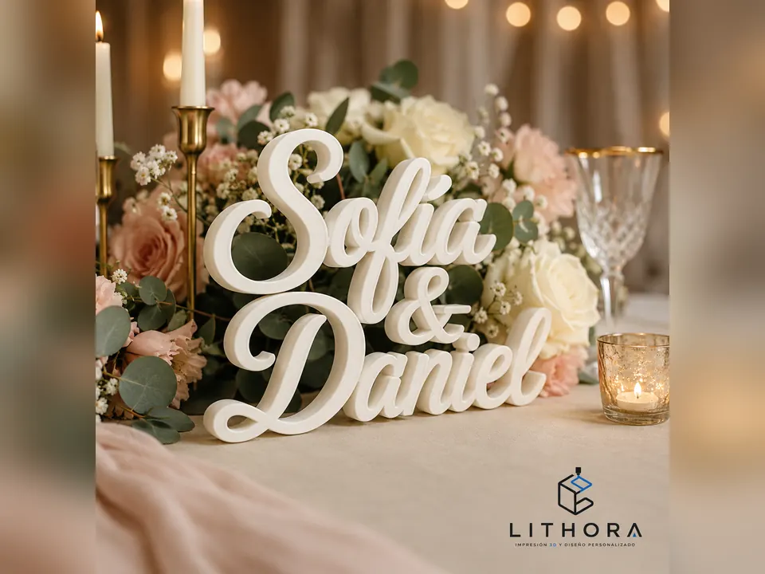
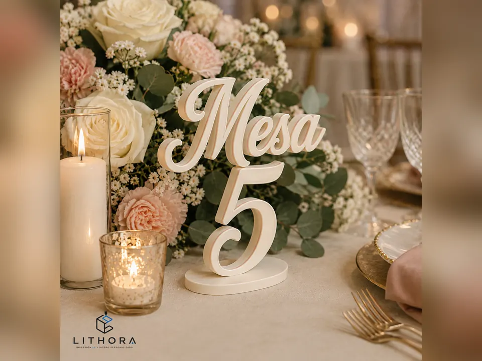

Llavero con iniciales y fecha
Iniciales y fecha en relieve, sin etiqueta pegada que se despegue. Es el recuerdo que sobrevive a la semana siguiente porque se usa a diario.
Prueba tu texto en el generador de llaveros 3D.
Inicio / Recuerdos para boda
Una boda son dos encargos distintos: las decenas de piezas chicas que se lleva cada invitado, y las pocas piezas grandes que salen en todas las fotos. Se planean por separado y se producen distinto.
EL LOTE PARA INVITADOS
Iniciales y fecha en relieve, sin etiqueta pegada que se despegue. Es el recuerdo que sobrevive a la semana siguiente porque se usa a diario.
Prueba tu texto en el generador de llaveros 3D.
Va en el plato y hace dos trabajos: acomoda a la gente y, al terminar la cena, el invitado se lo lleva.
Cada pieza puede llevar un nombre distinto; abajo explicamos por qué.
Termina en el refrigerador y sigue ahí años después. Funciona con la fecha, un monograma o la silueta de los novios en relieve.
Plano y ligero: el lote se transporta fácil.
Cuerpo impreso con el nombre de la pareja e inserto metálico. El típico recuerdo que se queda viviendo en el cajón de la cocina.
Pide material rígido: la pieza trabaja con fuerza.
Decora la mesa durante la boda y después se va con el invitado. Se diseña para vela de té, con la llama aislada del material.
Si lo quieres calado, la luz proyecta el patrón sobre el mantel.
No tienes que quedarte con un solo modelo: llavero para unos, imán para otros, marcador para todos.
Cada modelo es un archivo aparte; mezclar no complica nada.
DÓNDE GANA LA IMPRESIÓN 3D
Cuando un recuerdo se hace por inyección, troquel o grabado en serie, personalizar significa preparar una herramienta por cada variante. Por eso casi siempre te ofrecen la misma frase repetida en todas las piezas.
En impresión 3D no hay molde: cada pieza se arma desde su propio archivo y la máquina no nota la diferencia entre imprimir cien veces el mismo nombre o cien nombres distintos. Por eso cada invitado puede encontrar el suyo en su lugar.
Lo único que cambia el trabajo es tu lista: nombres en texto, revisados y con acentos.
DOS PEDIDOS DISTINTOS
Aquí manda la cantidad: pieza chica, repetida decenas de veces. Deciden cuántas son, cuánto miden y si hay que empacarlas una por una. El plazo se acuerda según el tamaño del lote.
Aquí manda la presencia: pocas piezas grandes que se ven de cerca en las fotos. El trabajo se va al tamaño, al acabado y a la tipografía.
DECORACIÓN

Va en la mesa principal o detrás del brindis. Letra cursiva unida y con espesor, para que se pare sola y proyecte sombra bajo la luz cálida.

El punto medio entre lote y pieza única: son varias, pero todas distintas. Se imprimen con base propia, sin depender de un portarretrato prestado.

Ligero y con las patas proporcionadas al número de pisos, para que no se hunda en el betún ni jale la cubierta al retirarlo.

Recibe a la gente en la entrada con el texto en relieve, que no se corre si le cae rocío ni se pandea como el papel.
El material cambia el resultado: mate contra brillante, blanco hueso contra blanco puro. Revísalo en la guía de materiales.
PREGUNTAS FRECUENTES
Se cuenta sobre invitados confirmados, no sobre invitaciones. Si el recuerdo es individual, como un llavero o un imán, va uno por persona; si es de mesa, como un portavelas, la cuenta sale por lugar puesto. Deja siempre un excedente chico.
Sí. Ahí es donde la impresión 3D se separa de los métodos con molde: cada pieza sale de su propio archivo, así que cien marcadores con cien nombres distintos no obligan a fabricar cien moldes.
Depende del tamaño de la pieza, de la cantidad, de los colores y de si lleva empaque. Por eso no publicamos cifras: se define en la conversación por WhatsApp, con tu número de invitados y el modelo que quieres.
El lote son decenas de piezas chicas que se llevan los invitados: ahí manda la repetición, el empaque y la lista de nombres. La decoración son pocas piezas grandes hechas para verse en foto. Se planean por separado.
Se trabaja con el color del material, no con pintura, así que el tono no se despinta ni se raya. Hay blancos, marfil, dorados, negros, pasteles y metalizados. Si traes una referencia exacta, conviene verla contra el material antes del lote completo.
Entre más grande el lote, más tiempo de máquina, así que el plazo se acuerda según el tamaño del pedido. Aparta lugar en la cola apenas definas el modelo y manda la lista de nombres ya cerrada.
EMPECEMOS
Con la cantidad, el tipo de pieza y los colores armamos la propuesta completa: el lote por un lado y la decoración por el otro. Entregamos en Tampico, Ciudad Madero y Altamira, y enviamos al resto de México.